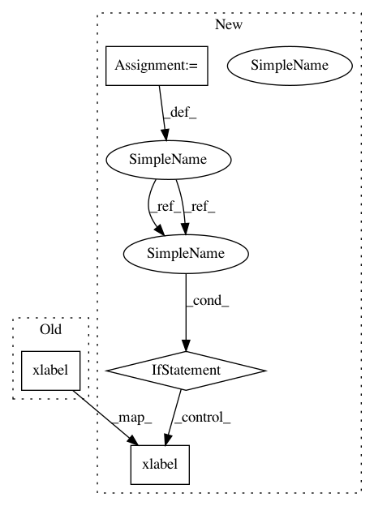

84c3180c93d44472c8ed8a559f19ead7c758eb47,src/skmultiflow/visualization/evaluation_visualizer.py,EvaluationVisualizer,__configure,#EvaluationVisualizer#Any#Any#Any#Any#,226
Before Change
self.subplot_prediction.legend(handle)
self.subplot_prediction.set_ylim(0, 1)
plt.xlabel("Samples")
self.fig.subplots_adjust(hspace=.5)
self.fig.tight_layout(rect=[0, .04, 1, 0.98], pad=2.6, w_pad=0.5, h_pad=1.0)
def _set_fig_legend(self, handles=None):
After Change
The number of learners to compare.
data_points = False
font_size_small = 8
font_size_medium = 10
font_size_large = 12
plt.rc("font", size=font_size_small) // controls default text sizes
plt.rc("axes", titlesize=font_size_medium) // font size of the axes title
plt.rc("axes", labelsize=font_size_small) // font size of the x and y labels
plt.rc("xtick", labelsize=font_size_small) // font size of the tick labels
plt.rc("ytick", labelsize=font_size_small) // font size of the tick labels
plt.rc("legend", fontsize=font_size_small) // legend font size
plt.rc("figure", titlesize=font_size_large) // font size of the figure title
warnings.filterwarnings("ignore", ".*GUI is implemented.*")
warnings.filterwarnings("ignore", ".*left==right.*")
warnings.filterwarnings("ignore", ".*Passing 1d.*")
self.n_sliding = n_sliding
self.dataset_name = dataset_name
self.plots = plots
self.n_learners = n_learners
self.sample_id = []
plt.ion()
self.fig = plt.figure(figsize=(9, 5))
self.fig.suptitle(dataset_name)
self.num_plots = len(self.plots)
base = 11 + self.num_plots * 100 // 3-digit integer describing the position of the subplot.
self.fig.canvas.set_window_title("scikit-multiflow")
if "performance" in self.plots:
self.partial_performance = [[] for _ in range(self.n_learners)]
self.global_performance = [[] for _ in range(self.n_learners)]
self.subplot_performance = self.fig.add_subplot(base)
self.subplot_performance.set_title("Accuracy")
self.subplot_performance.set_ylabel("Accuracy")
base += 1
self.line_partial_performance = [None for _ in range(self.n_learners)]
self.line_global_performance = [None for _ in range(self.n_learners)]
handle = []
for i in range(self.n_learners):
self.line_partial_performance[i], = self.subplot_performance.plot(
self.sample_id,
self.partial_performance[i],
label="{} (sliding {} samples)".format(self.model_names[i], self.n_sliding))
self.line_global_performance[i], = self.subplot_performance.plot(
self.sample_id, self.global_performance[i],
label="{} (global)".format(self.model_names[i]), linestyle="dotted")
handle.append(self.line_partial_performance[i])
handle.append(self.line_global_performance[i])
self._set_fig_legend(handle)
self.subplot_performance.set_ylim(0, 1)
if "kappa" in self.plots:
self.partial_kappa = [[] for _ in range(self.n_learners)]
self.global_kappa = [[] for _ in range(self.n_learners)]
self.subplot_kappa = self.fig.add_subplot(base)
self.subplot_kappa.set_title("Kappa")
self.subplot_kappa.set_ylabel("Kappa statistic")
base += 1
self.line_partial_kappa = [None for _ in range(self.n_learners)]
self.line_global_kappa = [None for _ in range(self.n_learners)]
handle = []
for i in range(self.n_learners):
self.line_partial_kappa[i], = self.subplot_kappa.plot(
self.sample_id, self.partial_kappa[i],
label="Model {} (sliding {} samples)".format(self.model_names[i], self.n_sliding))
self.line_global_kappa[i], = self.subplot_kappa.plot(
self.sample_id, self.global_kappa[i],
label="Model {} (global)".format(self.model_names[i]), linestyle="dotted")
handle.append(self.line_partial_kappa[i])
handle.append(self.line_global_kappa[i])
self._set_fig_legend(handle)
self.subplot_kappa.set_ylim(-1, 1)
if "kappa_t" in self.plots:
self.partial_kappa_t = [[] for _ in range(self.n_learners)]
self.global_kappa_t = [[] for _ in range(self.n_learners)]
self.subplot_kappa_t = self.fig.add_subplot(base)
self.subplot_kappa_t.set_title("Kappa T")
self.subplot_kappa_t.set_ylabel("Kappa T statistic")
base += 1
self.line_partial_kappa_t = [None for _ in range(self.n_learners)]
self.line_global_kappa_t = [None for _ in range(self.n_learners)]
handle = []
for i in range(self.n_learners):
self.line_partial_kappa_t[i], = self.subplot_kappa_t.plot(
self.sample_id, self.partial_kappa_t[i],
label="Model {} (sliding {} samples)".format(self.model_names[i], self.n_sliding))
self.line_global_kappa_t[i], = self.subplot_kappa_t.plot(
self.sample_id, self.global_kappa_t[i],
label="Model {} (global)".format(self.model_names[i]), linestyle="dotted")
handle.append(self.line_partial_kappa_t[i])
handle.append(self.line_global_kappa_t[i])
self._set_fig_legend(handle)
self.subplot_kappa_t.set_ylim(-1, 1)
if "kappa_m" in self.plots:
self.partial_kappa_m = [[] for _ in range(self.n_learners)]
self.global_kappa_m = [[] for _ in range(self.n_learners)]
self.subplot_kappa_m = self.fig.add_subplot(base)
self.subplot_kappa_m.set_title("Kappa M")
self.subplot_kappa_m.set_ylabel("Kappa M statistic")
base += 1
self.line_partial_kappa_m = [None for _ in range(self.n_learners)]
self.line_global_kappa_m = [None for _ in range(self.n_learners)]
handle = []
for i in range(self.n_learners):
self.line_partial_kappa_m[i], = self.subplot_kappa_m.plot(
self.sample_id, self.partial_kappa_m[i],
label="Model {} (sliding {} samples)".format(self.model_names[i], self.n_sliding))
self.line_global_kappa_m[i], = self.subplot_kappa_m.plot(
self.sample_id, self.global_kappa_m[i],
label="Model {} (global)".format(self.model_names[i]), linestyle="dotted")
handle.append(self.line_partial_kappa_m[i])
handle.append(self.line_global_kappa_m[i])
self._set_fig_legend(handle)
self.subplot_kappa_m.set_ylim(-1, 1)
if "hamming_score" in self.plots:
self.global_hamming_score = [[] for _ in range(self.n_learners)]
self.partial_hamming_score = [[] for _ in range(self.n_learners)]
self.subplot_hamming_score = self.fig.add_subplot(base)
self.subplot_hamming_score.set_title("Hamming score")
self.subplot_hamming_score.set_ylabel("Hamming score")
base += 1
self.line_partial_hamming_score = [None for _ in range(self.n_learners)]
self.line_global_hamming_score = [None for _ in range(self.n_learners)]
handle = []
for i in range(self.n_learners):
self.line_partial_hamming_score[i], = self.subplot_hamming_score.plot(
self.sample_id, self.partial_hamming_score[i],
label="Model {} (sliding {} samples)".format(self.model_names[i], self.n_sliding))
self.line_global_hamming_score[i], = self.subplot_hamming_score.plot(
self.sample_id, self.global_hamming_score[i],
label="Model {} (global)".format(self.model_names[i]), linestyle="dotted")
handle.append(self.line_partial_hamming_score[i])
handle.append(self.line_global_hamming_score[i])
self._set_fig_legend(handle)
self.subplot_hamming_score.set_ylim(0, 1)
if "hamming_loss" in self.plots:
self.global_hamming_loss = [[] for _ in range(self.n_learners)]
self.partial_hamming_loss = [[] for _ in range(self.n_learners)]
self.subplot_hamming_loss = self.fig.add_subplot(base)
self.subplot_hamming_loss.set_title("Hamming loss")
self.subplot_hamming_loss.set_ylabel("Hamming loss")
base += 1
self.line_partial_hamming_loss = [None for _ in range(self.n_learners)]
self.line_global_hamming_loss = [None for _ in range(self.n_learners)]
handle = []
for i in range(self.n_learners):
self.line_partial_hamming_loss[i], = self.subplot_hamming_loss.plot(
self.sample_id, self.partial_hamming_loss[i],
label="Model {} (sliding {} samples)".format(self.model_names[i], self.n_sliding))
self.line_global_hamming_loss[i], = self.subplot_hamming_loss.plot(
self.sample_id, self.global_hamming_loss[i],
label="Model {} (global)".format(self.model_names[i]), linestyle="dotted")
handle.append(self.line_partial_hamming_loss[i])
handle.append(self.line_global_hamming_loss[i])
self._set_fig_legend(handle)
self.subplot_hamming_loss.set_ylim(0, 1)
if "exact_match" in self.plots:
self.global_exact_match = [[] for _ in range(self.n_learners)]
self.partial_exact_match = [[] for _ in range(self.n_learners)]
self.subplot_exact_match = self.fig.add_subplot(base)
self.subplot_exact_match.set_title("Exact matches")
self.subplot_exact_match.set_ylabel("Exact matches")
base += 1
self.line_partial_exact_match = [None for _ in range(self.n_learners)]
self.line_global_exact_match = [None for _ in range(self.n_learners)]
handle = []
for i in range(self.n_learners):
self.line_partial_exact_match[i], = self.subplot_exact_match.plot(
self.sample_id, self.partial_exact_match[i],
label="Model {} (sliding {} samples)".format(self.model_names[i], self.n_sliding))
self.line_global_exact_match[i], = self.subplot_exact_match.plot(
self.sample_id, self.global_exact_match[i],
label="Model {} (global)".format(self.model_names[i]), linestyle="dotted")
handle.append(self.line_partial_exact_match[i])
handle.append(self.line_global_exact_match[i])
self._set_fig_legend(handle)
self.subplot_exact_match.set_ylim(0, 1)
if "j_index" in self.plots:
self.global_j_index = [[] for _ in range(self.n_learners)]
self.partial_j_index = [[] for _ in range(self.n_learners)]
self.subplot_j_index = self.fig.add_subplot(base)
self.subplot_j_index.set_title("J index")
self.subplot_j_index.set_ylabel("J index")
base += 1
self.line_partial_j_index = [None for _ in range(self.n_learners)]
self.line_global_j_index = [None for _ in range(self.n_learners)]
handle = []
for i in range(self.n_learners):
self.line_partial_j_index[i], = self.subplot_j_index.plot(
self.sample_id, self.partial_j_index[i],
label="Model {} (sliding {} samples)".format(self.model_names[i], self.n_sliding))
self.line_global_j_index[i], = self.subplot_j_index.plot(
self.sample_id, self.global_j_index[i],
label="Model {} (global)".format(self.model_names[i]), linestyle="dotted")
handle.append(self.line_partial_j_index[i])
handle.append(self.line_global_j_index[i])
self._set_fig_legend(handle)
self.subplot_j_index.set_ylim(0, 1)
if "mean_square_error" in self.plots:
self.global_mse = [[] for _ in range(self.n_learners)]
self.partial_mse = [[] for _ in range(self.n_learners)]
self.subplot_mse = self.fig.add_subplot(base)
self.subplot_mse.set_title("Mean Squared Error")
self.subplot_mse.set_ylabel("MSE")
base += 1
self.line_partial_mse = [None for _ in range(self.n_learners)]
self.line_global_mse = [None for _ in range(self.n_learners)]
handle = []
for i in range(self.n_learners):
self.line_partial_mse[i], = self.subplot_mse.plot(
self.sample_id, self.partial_mse[i],
label="Model {} (sliding {} samples)".format(self.model_names[i], self.n_sliding))
self.line_global_mse[i], = self.subplot_mse.plot(
self.sample_id, self.global_mse[i],
label="Model {} (global)".format(self.model_names[i]), linestyle="dotted")
handle.append(self.line_partial_mse[i])
handle.append(self.line_global_mse[i])
self._set_fig_legend(handle)
self.subplot_mse.set_ylim(0, 1)
if "mean_absolute_error" in self.plots:
self.global_mae = [[] for _ in range(self.n_learners)]
self.partial_mae = [[] for _ in range(self.n_learners)]
self.subplot_mae = self.fig.add_subplot(base)
self.subplot_mae.set_title("Mean Absolute Error")
self.subplot_mae.set_ylabel("MAE")
base += 1
self.line_partial_mae = [None for _ in range(self.n_learners)]
self.line_global_mae = [None for _ in range(self.n_learners)]
handle = []
for i in range(self.n_learners):
self.line_partial_mae[i], = self.subplot_mae.plot(
self.sample_id, self.partial_mae[i],
label="Model {} (sliding {} samples)".format(self.model_names[i], self.n_sliding))
self.line_global_mae[i], = self.subplot_mae.plot(
self.sample_id, self.global_mae[i],
label="Model {} (global)".format(self.model_names[i]), linestyle="dotted")
handle.append(self.line_partial_mae[i])
handle.append(self.line_global_mae[i])
self._set_fig_legend(handle)
self.subplot_mae.set_ylim(0, 1)
if "true_vs_predicts" in self.plots:
self.true_values = []
self.pred_values = [[] for _ in range(self.n_learners)]
self.subplot_true_vs_predicts = self.fig.add_subplot(base)
self.subplot_true_vs_predicts.set_title("True vs Predicted")
self.subplot_true_vs_predicts.set_ylabel("y")
self.subplot_true_vs_predicts.set_prop_cycle(cycler("color", ["c", "m", "y", "k"]))
base += 1
if self.task_type == "classification":
self.line_true, = self.subplot_true_vs_predicts.step(self.sample_id, self.true_values,
label="True value")
else:
self.line_true, = self.subplot_true_vs_predicts.plot(self.sample_id, self.true_values,
label="True value")
handle = [self.line_true]
self.line_pred = [None for _ in range(self.n_learners)]
for i in range(self.n_learners):
if self.task_type == "classification":
self.line_pred[i], = self.subplot_true_vs_predicts.step(self.sample_id, self.pred_values[i],
label="Model {} (global)".
format(self.model_names[i]),
linestyle="dotted")
else:
self.line_pred[i], = self.subplot_true_vs_predicts.plot(self.sample_id, self.pred_values[i],
label="Model {} (global)".
format(self.model_names[i]),
linestyle="dotted")
handle.append(self.line_pred[i])
self.subplot_true_vs_predicts.legend(handles=handle)
self.subplot_true_vs_predicts.set_ylim(0, 1)
if "prediction" in self.plots:
self.prediction = [[] for _ in range(self.n_learners)]
handle = []
self.subplot_prediction = self.fig.add_subplot(base)
self.subplot_prediction.set_title("Predicted values")
self.subplot_prediction.set_ylabel("y")
self.subplot_prediction.set_prop_cycle(cycler("color", ["c", "m", "y", "k"]))
base += 1
self.line_prediction = [None for _ in range(self.n_learners)]
for i in range(self.n_learners):
if self.task_type == "classification":
self.line_prediction[i], = self.subplot_prediction.step(self.sample_id, self.prediction[i],
label="Model {} (global)".
format(self.model_names[i])
)
else:
self.line_prediction[i], = self.subplot_prediction.plot(self.sample_id, self.prediction[i],
label="Model {} (global)".
format(self.model_names[i])
)
handle.append(self.line_prediction[i])
self.subplot_prediction.legend(handle)
self.subplot_prediction.set_ylim(0, 1)
if "data_points" in self.plots:
data_points = True
self.Flag = True
self.X = FastBuffer(5000)
self.targets = []
self.prediction = [[] for _ in range(self.n_learners)]
self.clusters = [[] for _ in range(self.n_learners)]
self.subplot_scatter_points = self.fig.add_subplot(base)
base += 1
if data_points:
plt.xlabel("X1")
else:
plt.xlabel("Samples")
self.fig.subplots_adjust(hspace=.5)
self.fig.tight_layout(rect=[0, .04, 1, 0.98], pad=2.6, w_pad=0.5, h_pad=1.0)
def _set_fig_legend(self, handles=None):
In pattern: SUPERPATTERN
Frequency: 3
Non-data size: 4
Instances
Project Name: scikit-multiflow/scikit-multiflow
Commit Name: 84c3180c93d44472c8ed8a559f19ead7c758eb47
Time: 2018-08-01
Author: aminekrifi1994@gmail.com
File Name: src/skmultiflow/visualization/evaluation_visualizer.py
Class Name: EvaluationVisualizer
Method Name: __configure
Project Name: scikit-multiflow/scikit-multiflow
Commit Name: 4fdaabaa73db02975a36f8d28f31b70fe8b7028e
Time: 2018-08-09
Author: aminekrifi1994@gmail.com
File Name: src/skmultiflow/visualization/evaluation_visualizer.py
Class Name: EvaluationVisualizer
Method Name: __configure
Project Name: prody/ProDy
Commit Name: 5356c93e2c5a5c349f59d50fb81849ed5b0aa556
Time: 2012-11-19
Author: lordnapi@gmail.com
File Name: lib/prody/sequence/plotting.py
Class Name:
Method Name: showShannonEntropy
Project Name: scikit-multiflow/scikit-multiflow
Commit Name: 84c3180c93d44472c8ed8a559f19ead7c758eb47
Time: 2018-08-01
Author: aminekrifi1994@gmail.com
File Name: src/skmultiflow/visualization/evaluation_visualizer.py
Class Name: EvaluationVisualizer
Method Name: __configure